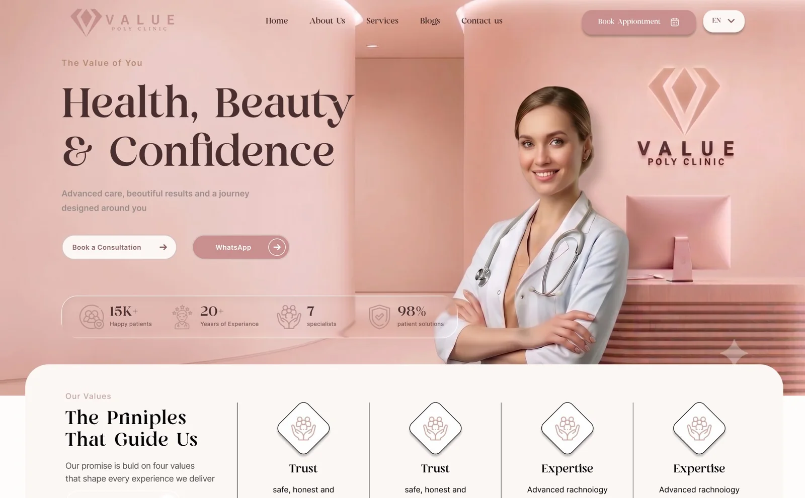
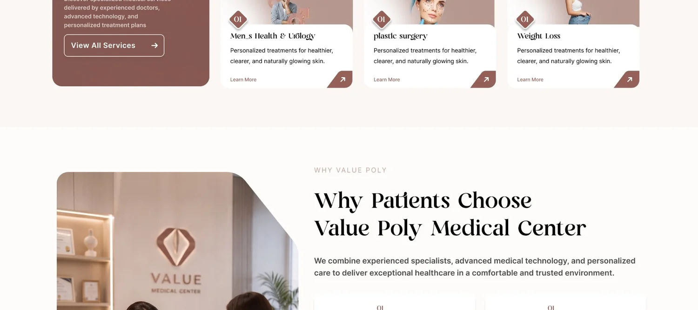
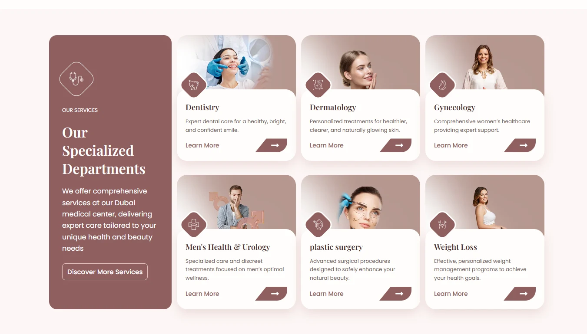
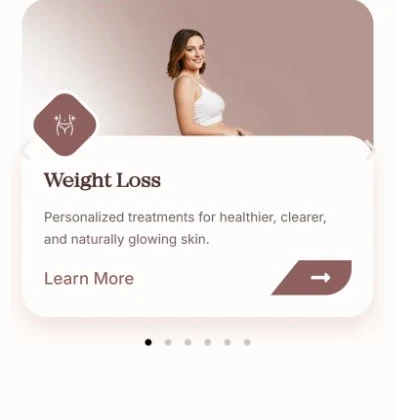
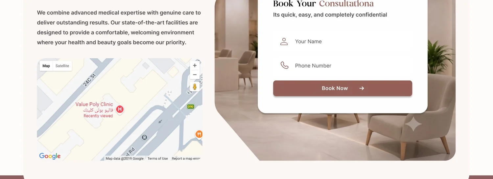

ست تخصصات، عيادة واحدة، وبراند لسه بيثبت اسمه.
Value Poly بتشغّل جلدية، صحة رجالي، جراحة تجميل، نسا وتوليد، أسنان، وتخسيس تحت سقف واحد. كل تخصص كان ممكن بسهولة يتقرا كأنه بيزنس صغير مستقل — نغمة مختلفة، إشارات ثقة مختلفة، سبب مختلف للحجز.
البراند نفسه كان في مرحلة انتقالية: الموقع والنافيجيشن بيقولوا "Value Poly"، بس لافتة العيادة نفسها لسه مكتوب عليها "Value Medical Center". أي حاجة أصممها كان لازم تحمل الاسم الجديد بثبات، في كل مكان، بدون ما تستنى باقي البيزنس يلحق.
نعطي كل تخصص نفس الشكل، عشان ولا واحد فيهم يضطر يتنافس.
بدل هيدلاين يبدأ بتخصص معين، الهيرو بيعمل وعد واحد — "Health, Beauty & Confidence" — أي من الست خدمات تقدر تقف تحته. شريط ثقة (عدد المرضى، سنين الخبرة، عدد الأخصائيين، نسبة الرضا) موجود تحته على طول، قبل ما الزائر يقرا سطر واحد من وصف أي خدمة.
وعد واحد
جملة هيرو واحدة بدل ست دعوات بتتنافس مع بعض، مع نقاط إثبات تحتها على طول.
طريقتين للتصرف
"Book a Consultation" والواتساب جنب بعض — المرضى اللي بيفضلوا يراسلوا قبل ما يتصلوا، مش طريق درجة تانية.
كارت واحد، ست مرات
كل تخصص بيستخدم نفس الكارت: أيقونة، اسم، سطر واحد، طريقة للدخول. العيادة بتقرا كنظام واحد، مش ست أنظمة.
باليت واحدة ولغة أيقونات واحدة، شغالة لحد ما بعد الصفحة الرئيسية.
باليت من الوردي الباهت للزهري بتمتد من الهيرو لحد الفوتر بدل ما تتصفّر من سكشن لسكشن، وكل قيمة وخدمة بتشارك نفس ستايل الأيقونة — خط هادي جوه معيّن مدوّر الحواف، بيصدّي علامة "V" الخاصة بالعيادة. الهدف كان إن "Value Poly" يحس إنه الاسم اللي على الباب، مش بس الاسم اللي في الهيدر.

الباليت فاضلة دافية وهادية عن قصد — الوردي الترابي والبيج بيحسوا كسبا مش كعيادة، في حين إن البنفسجي الغامق بيحمل وزن كافي للعناوين والأزرار عشان تحس بالثقة، مش بس الجمال.
عنوان EN
Playfair Display
نص EN
Poppins
الست تخصصات تتحول لسحبة، مش لتصغيرة.
على الديسكتوب الست تخصصات واقفة في جريد ثابت 2×3 جنب كارت التعريف، كلهم ظاهرين في نفس الوقت. على الموبايل الجريد ده بيتحول لكاروسيل قابل للسحب كارت واحد في المرة مع نقاط للتنقل — إعادة تفكير متعمدة في طريقة التصفح لشاشة اللمس، مش نفس الجريد مضغوط في عمود واحد ضيق.


مبني بشكل فردي، بووردبريس وإليمنتور برو.
صممت وبنيت ده من أوله لآخره بنفسي — مفيش تسليم منفصل لفرونت إند. كل عنصر متكرر (كارت خدمة، بلاطة إحصائية، شهادة عميل) هو سكشن إليمنتور محفوظ، فإضافة تخصص سابع بعدين تبقى مسألة تكرار صف، مش إعادة تصميم. موديول الحجز بيجمع فورم قصير بحقلين مع خريطة مدمجة محددة على العيادة، عشان "فين أنتوا" و"أقدر أحجز دلوقتي" يتجاوبوا في نفس النظرة.

شوية قرارات جاية من البريف، مش من التمبلت.
لما بشوف الشغل ده تاني بعين UX، ثلاث قرارات بتعمل أكتر بكتير من اللي تبدو عليه:
الكوبي معاد كتابته لكل جهاز، مش مجرد تصغير
هيدلاين الهيرو مش نفس الجملة متصغرة — الموبايل بياخد "All in One Trusted Medical Destination"، وعد أقصر مبني لأول سكرول أصغر، في حين إن الديسكتوب عنده مساحة للجملة الأطول "Your Trusted Medical & Aesthetic Destination in Dubai".
علامة معيّن واحدة، ثلاث وظائف
علامة المعيّن في لوجو العيادة بترجع تاني كإطار أيقونة كارت الخدمة، وبعدين تاني كشكل أيقونة سكشن الثقة — نفس الشكل الهندسي بيعمل براندنج، وتنقل، وإشارة مصداقية، بدل ثلاث مجموعات أيقونات مش مرتبطة ببعض.
الإثبات موضوع فين الشك بيحصل
تقييم جوجل والتعليقات الحقيقية غير المعدّلة — بما فيها العربي — موجودين في سكشن خاص بيهم بدل خانة شهادات عامة، قبل فورم الحجز على طول، في اللحظة اللي الزائر فيها بيقرر هل العيادة تستحق الثقة الكافية إنه يسيبلها رقمه.
المحتوى هو الجزء اللي عمره ما بيخلص فعليًا.
مع البنية الموجودة، اللي فاضل هو الجزء المستمر: إعطاء كل واحدة من الست تخصصات وصفها الخاص بدل سطر عام مشترك، وتدوير شهادات عملاء حقيقية مع وصولها بدل إعادة استخدام واحدة أو اتنين. النظام مبني عشان ياخد المحتوى ده وقت ما ييجي — بس هو لسه ما وصلش كله.
هوية واحدة، من الهيرو لفورم الحجز.
الزائر يقدر يوصل لأي من الست تخصصات ويلاقي نفس الوعد، نفس إشارات الثقة، ونفس طريقتين للتصرف — الحجز أو الواتساب — بدون ما العيادة تحس أبدًا إنها ست بيزنسات مختلفة بتشارك دومين واحد.